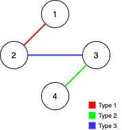

LC 1579 - Remove Max Number of Edges to Keep Graph Fully Traversable
Table of Contents
1579. Remove Max Number of Edges to Keep Graph Fully Traversable
Link: Remove Max Number of Edges to Keep Graph Fully Traversable
Problem Description
Alice and Bob have an undirected graph of n nodes and 3 types of edges:
- Type 1: Can be traversed by Alice only.
- Type 2: Can be traversed by Bob only.
- Type 3: Can by traversed by both Alice and Bob.
Given an array edges where edges[i] = [typei, ui, vi] represents a bidirectional edge of type typei between nodes ui and vi, find the maximum number of edges you can remove so that after removing the edges, the graph can still be fully traversed by both Alice and Bob. The graph is fully traversed by Alice and Bob if starting from any node, they can reach all other nodes.
Return the maximum number of edges you can remove, or return -1 if it’s impossible for the graph to be fully traversed by Alice and Bob.
Example 1:

Input: n = 4, edges = [[3,1,2],[3,2,3],[1,1,3],[1,2,4],[1,1,2],[2,3,4]]
Output: 2
Explanation: If we remove the 2 edges [1,1,2] and [1,1,3]. The graph will still be fully traversable by Alice and Bob. Removing any additional edge will not make it so. So the maximum number of edges we can remove is 2.
Example 2:

Input: n = 4, edges = [[3,1,2],[3,2,3],[1,1,4],[2,1,4]]
Output: 0
Explanation: Notice that removing any edge will not make the graph fully traversable by Alice and Bob.
Example 3:

Input: n = 4, edges = [[3,2,3],[1,1,2],[2,3,4]]
Output: -1
Explanation: In the current graph, Alice cannot reach node 4 from the other nodes. Likewise, Bob cannot reach 1. Therefore it's impossible to make the graph fully traversable.
Constraints:
1 <= n <= 10^51 <= edges.length <= min(10^5, 3 * n * (n-1) / 2)edges[i].length == 31 <= edges[i][0] <= 31 <= edges[i][1] < edges[i][2] <= n- All tuples
(typei, ui, vi)are distinct.
Method & Code
Union find. When union two nodes and they have same root, then there is a non-critical edge connects two nodes.
Type 3 can be both accessed by A and B, hence, union the nodes that can be connected by type 3 first. If there are two nodes have same root when union, there is a non-critical edge.
The number of non-critical edges are the max number of edges can be removed. Then union all type 1 and 2 edges, keep counting the the non-critical edges. Also, counting the critical edges when doing the union for type 1 and type 2.
If the number type 1 or type 2 critical edge are not equal to n - 1, then there are nodes not connected.
/**
* Union find. When union two nodes and they have same root, then there is a non-critical edge connects two nodes.
* Type 3 can be both accessed by A and B, hence, union the nodes that can be connected by type 3 first.
* If there are two nodes have same root when union, there is a non-critical edge.
* The number of non-critical edges are the max number of edges can be removed.
* Then union all type 1 and 2 edges, keep counting the the non-critical edges.
* Also, counting the critical edges when doing the union for type 1 and type 2.
* If the number type 1 or type 2 critical edge are not equal to n - 1, then there are nodes not connected.
*
* @param n number of nodes in graph
* @param edges given edges with type and connection
* @return maximum number of edges can be removed and still keep graph being fully traversable
*/
public int maxNumEdgesToRemove(int n, int[][] edges) {
int[] parent = new int[n + 1];
int count1 = 0, count2 = 0, out = 0;
for (int i = 0; i <= n; i++) {
parent[i] = i;
}
for (int[] e : edges) {
if (e[0] == 3) {
if (!union(e[1], e[2], parent)) {
count1++;
count2++;
} else {
out++;
}
}
}
int[] parent1 = parent.clone();
for (int[] e : edges) {
if (e[0] == 1) {
if (!union(e[1], e[2], parent)) {
count1++;
} else {
out++;
}
}
}
parent = parent1; // exclude type 1 edge, since it can not be accessed by B
for (int[] e : edges) {
if (e[0] == 2) {
if (!union(e[1], e[2], parent)) {
count2++;
} else {
out++;
}
}
}
return (count1 == count2 && count2 == (n - 1)) ? out : -1;
}
/**
* Union method.
* It returns whether there exists non-critical edge between two nodes.
* If two nodes have same root, then there is a non-critical edge between them.
*
* @param x first node
* @param y second node
* @param parent int array stores each node's parent
* @return if there exists non-critical edge between two nodes
*/
private boolean union(int x, int y, int[] parent) {
int root1 = find(x, parent);
int root2 = find(y, parent);
if (root1 == root2) {
return true; // there are redundant edge can be removed
}
parent[root1] = root2;
return false; // no redundant edge
}
/**
* Find the root of current node.
*
* @param node given node
* @param parent each node's parent
* @return root of current node
*/
private int find(int node, int[] parent) {
parent[node] = node == parent[node] ? node : find(parent[node], parent);
return parent[node];
}